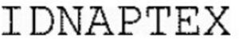

Trade Mark Journal No.2025/040 3 October 2025
WO0000001876105 (1,5,10)
Office of origin: France
Date of International Registration:19 June 2025
Date of designation in the UK:
19 June 2025

International priority date claimed: 20 December 2024
(France)
(5107714)
- Class 1
- Diagnostic products, preparations and reagents other than for medical and veterinary use; screening agents for in-vitro diagnosis for scientific use; diagnostic reagents other than for medical use sold in kit form; diagnostic reagents for in-vitro use other than for medical use; reagents for in-vitro laboratory uses other than for medical and veterinary use; chemical preparations intended for use in DNA analysis, other than for medical use; enzymes, other than for medical use, for continuous, homogeneous and isothermal amplification processes for DNA-specific models; chemical genetic identity tests comprised of reagents; reagents for nucleic acid amplification other than for medical use.
- Class 5
- Pharmaceutical products; products, preparations and reagents for diagnosis for medical or veterinary use; diagnostic materials for medical or veterinary use; reagents for medical use; chemical reagents for medical or veterinary use; organic reagents for medical or veterinary use; reagents for analysis for medical use; reagents for diagnostic tests for medical use; reagents for genetic testing in medicine; reagents for in vitro use in laboratories for medical use; in vitro diagnostic preparation for medical use; indicators for medical diagnosis; diagnostic substances for medical use; diagnostic biomarking reagents for medical use; diagnostic test kits for detecting gene mutations implicated in cancers; in vitro test kits for detecting genetic defects; chemical preparations intended for use in DNA analysis for medical use; genetic identity tests comprising reagents for medical use; preparations for detecting genetic predispositions for medical use; reagents for nucleic acid amplification for medical use; diagnostic material for medical and veterinary use.
- Class 10
- Apparatus, tools and instruments for medical diagnosis; DNA and RNA testing apparatus for medical use; genetic testing apparatus for medical use; quantitative polymerase chain reaction [PCR] instrument for medical use; samplers for medical use.
ID SOLUTIONS
Representative: Madame DUPAIN Esther REGIMBEAU, 20 Rue de Chazelles, F-75847 Paris Cedex 17, FRANCE